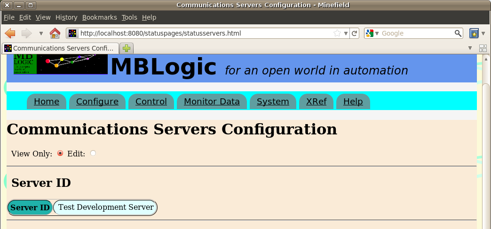
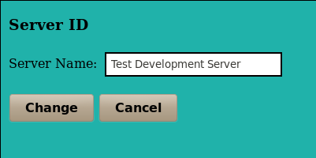
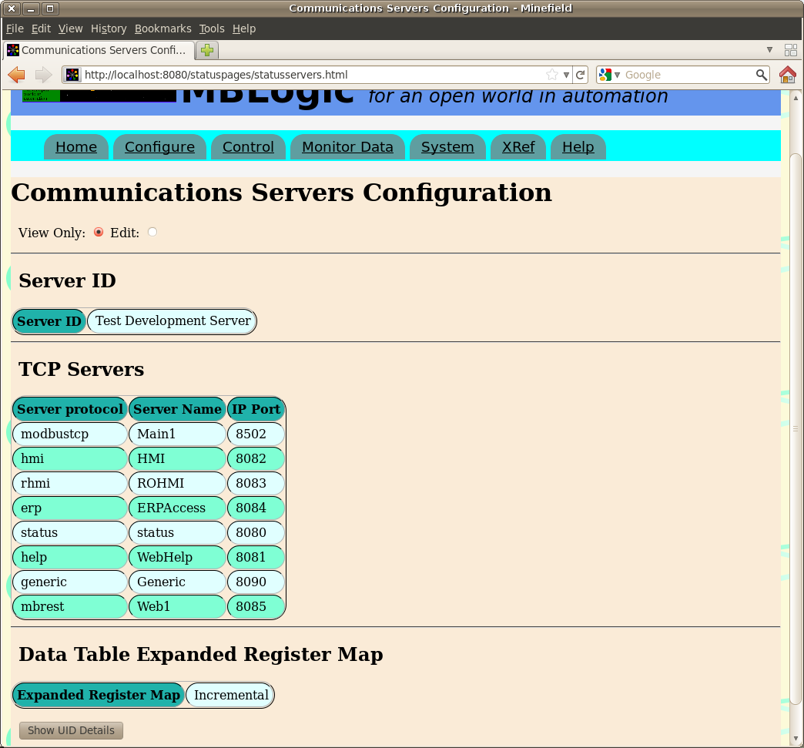
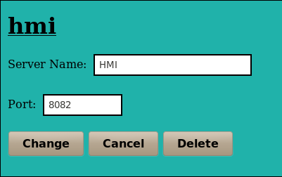
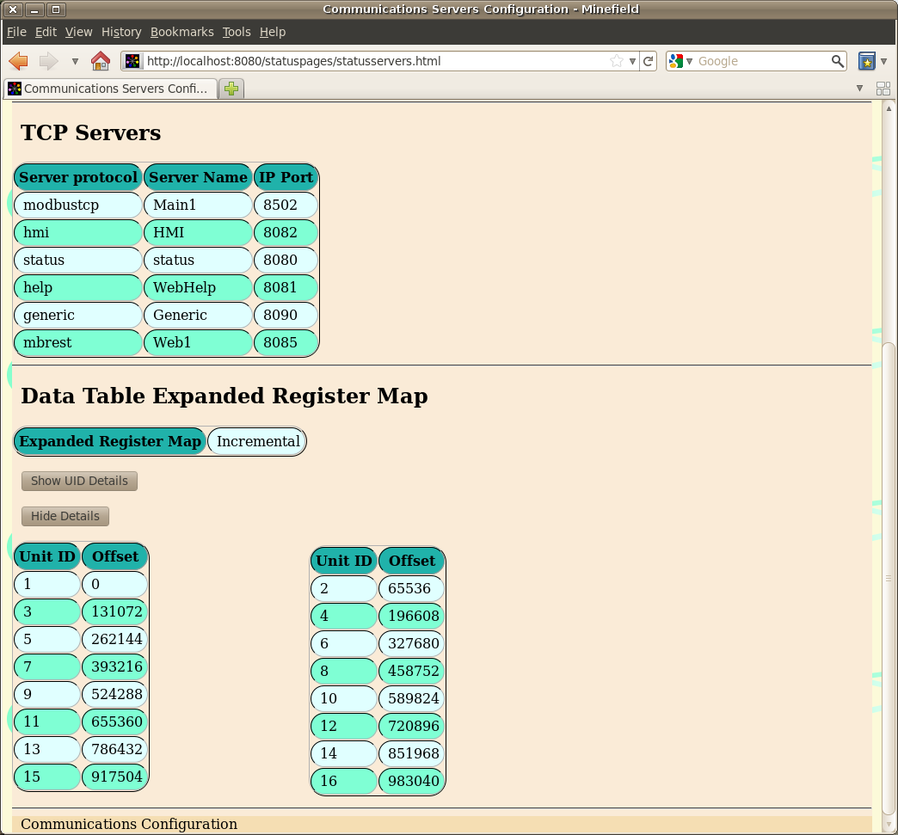
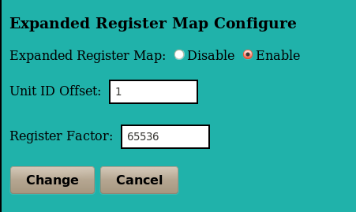

MBLogic
for an open world in automation
MBLogic
for an open world in automation
Help - Configure Server Communications
Overview
The "Configure Servers" page provides an overview the current configuration of the server communications subsystem. This is divided into the following sections:
- Servers ID
- TCP Servers
- Data Table Expanded Register Map
Server ID
This section shows the server id configuration. The server id is the "name" given to the system to identify it (e.g. "Press1").

Editing the Server ID
To edit the server id, enable configuration editing and then click on the server id. Edit the server id string and then press "change".

Servers

The servers table lists the active servers. The items of data include:
- The name of the server as assigned in the configuration file.
- The server protocol.
- The IP port used.
Editing the Server Data
To edit the server data, enable configuration editing and then click on the server you wish to edit. Edit the server name or port number and then press "change". You many delete the server by pressing the "delete button". Deleting a server does not remove the row from the table. Rather it simply clears the information from that server type. Since there may be only one of each type of server protocol present, all available server types are displayed whether they are configured (and active) or not.

Data Table Expanded Register Map

This lists the data table expanded register map values used. This includes:
- The mode (disabled or incremental).
- A table listing the configured unit IDs and the resulting calculated register map offsets.
Editing the Register Map
To edit the expanded register map parameters, enable configuration editing and then click on the expanded register map configuration. Edit the parameters and then press "change". If you select "disable", the uid offset and register factor are not used.
